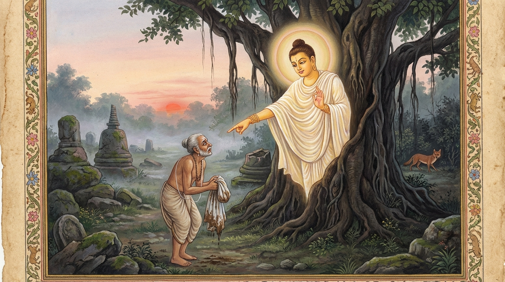

3. සිඟාල ජාතකය (113)
“සද්දහාසි සිඞ්ගාලස්ස” යනාදී වූ මේ ජාතකය බුදුරජාණන් වහන්සේ වේළුවනයෙහි වැඩවසන සමයෙහි දේවදත්ත තෙරුන් අරබයා දේශනා කළහ. එකල්හි භික්ෂූන් ධර්ම සභාවේ රැස්ව, “ඇවැත්නි, දේවදත්තයන් වහන්සේ භික්ෂූන් පන්සියයක් රැගෙන ගයාසීසයට ගොස්, ‘ශ්රමණ ගෞතමයන් වහන්සේ යමක් කරති ද එය ධර්මය නොවේ, මම යමක් කරම් ද මෙයම ධර්මය යැ’යි පවසා ඒ භික්ෂූන්ට තමාගේ මිථ්යා ලබ්ධිය ගන්වා, මුසාවාදය මුදුන්පත් කොටගෙන, සංඝයා භේද කොට, එකම සීමාවක් තුළ පොහොය කර්ම දෙකක් කළේ යැ”යි දේවදත්තයන්ගේ අගුණ කතා කියමින් සිටියහ. ශාස්තෘන් වහන්සේ එහි වැඩමවා, “මහණෙනි, මේ දැන් කවර නම් කතාවකින් යුතුව හුන්නාහු දැ?”යි විචාරා, “මෙනම් කතාවකින් යුතුවය”යි කී කල්හි, “මහණෙනි, දේවදත්ත තෙම දැන් පමණක් නොව පෙර ද බොරු කියන්නෙකි”යි වදාරා අතීත කතාව ගෙනහැර දැක්වූහ.
අතීතයෙහි බරණැස් නුවර බ්රහ්මදත්ත රජු රාජ්යය කරන කල්හි බෝධිසත්ත්වයෝ සොහොනක් අසල වනයක රුක් දෙවියෙක් වී උපන්හ.
එකල බරණැස් නුවර නැකැත් කෙළියක් ප්රකාශ කරන ලදි. මිනිස්සු “යක්ෂ බලි පූජාවක් කරමු”යි මහමඟ, සිව්මංසල ආදී තැන්වල
මත්ස්ය මාංශ ආදිය විසුරුවා මිනී හිස් කබල්වල බොහෝ සුරා තැබූහ. එකල්හි එක් සිවලෙක් මධ්යම රාත්රියෙහි ජල බැස යන
කානුවකින් නගරයට පිවිස මත්ස්ය මාංශ කා, සුරා බී, දොඹ ගස් පඳුරක් අතරට රිංගා අරුණ නැගෙන තෙක් නින්දට වැටුණේය.
ඔහු පිබිදී එළිය වැටී ඇති බව දැක “දැන් පිටතට යා නොහැකිය”යි සිතා පාර අයිනට ගොස් සැඟවී සිටියේය. අන් මිනිසුන්
දැක කිසිවක් නොකියා සිටි හෙතෙම, මුව දෝවනය සඳහා යන එක් බමුණෙකු දැක මෙසේ සිතීය: “බමුණෝ නම් ධන ලෝභියෝ වෙති.
මොහුට ධනය දෙන බව පවසා පොළඹවා, යම් සේ මොහු මා උතුරු සළුවෙන් වසා කිහිලි අතරේ තබාගෙන නගරයෙන් පිටතට ගෙන යයි ද,
එසේ කරන්නෙමි”.
එසේ සිතා සිවලා මිනිස් බසින් “බමුණ” යි ඇමතීය. ඔහු ද ආපසු හැරී “කවුද මා අමතන්නේ?” යි
ඇසීය. “බමුණ, මම ය”. “කුමන කාරණයක් ද?” “බමුණ, මා ළඟ කහවණු දෙසීයක් තිබේ. ඉදින් ඔබ මා කිහිලි අතරේ තබාගෙන උතුරු
සළුවෙන් වසා කිසිවකුට නොපෙනෙන සේ නගරයෙන් පිටතට ගෙන යාමට හැක්කේ නම්, මම ඒ කහවණු ඔබට දෙන්නෙමි”. බමුණා ද ධන
ලෝභයෙන් “යහපතැ”යි ඊට එකඟ වී, සිවලා කී පරිදි ඌව සඟවාගෙන නුවරින් නික්ම මද දුරක් ගියේය. එකල්හි සිවලා බමුණාගෙන්
“බමුණ, මේ කුමන ස්ථානය ද?” යි ඇසීය. “මේ අසවල් තැන ය”යි කී විට, “තවත් ටිකක් දුර යන්න”යි කීවේය. මෙසේ නැවත නැවත
කියමින් මහා සොහොන් පිටියට පැමිණි පසු “දැන් මා බිමට බස්සවන්න”යි සිවලා කීවේය. බමුණා ඌව බිමට බැස්සවීය. එවිට
සිවලා, “එසේ නම් බමුණ, ඔබේ උතුරු සළුව බිම එළන්න” යි කීවේය. ඔහු ධන ලෝභයෙන් “යහපතැ”යි කියා සළුව දිගහැරියේය.
ඉක්බිති “මේ ගස මුල පොළොව හාරන්න”යි කියා බමුණා පොළොව සෑරීමෙහි යොදවා, සිවලා බමුණාගේ උතුරු සළුවට නැඟ සිව්කොන හා
මැද යන පස් තැනක මළ පහ කොට, අසූචි තවරා මුත්රා කොට තෙමා, සොහොන් වනයට ම රිංගා ගත්තේය. රුක් දෙවි වූ
බෝධිසත්ත්වයෝ රුක් දෙබලක සිට මේ ගාථාව පැවසූහ:
“බ්රාහ්මණය, සුරා බී මත් වී සිටි සිවලාගේ වචනය ඔබ විශ්වාස කළෙහි ද? ඌ ළඟ බෙල්ලන් සියයක් වත් නැත. එසේ තිබියදී කහවණු දෙසීයක් කොයින් ද?”
එහි “සද්දහාසි” යනු ‘විශ්වාස කරන්නේ ද?’ යන්නයි. “සද්දහෙසි” යනුවෙන් ද පාඨයක් ඇති අතර එහි අරුත ‘කැමැති වන්නෙහි ද?’ යනුයි. “සිප්පිකානං සතං නත්ථි” යනු මොහුට බෙල්ලන් (මුදල් ලෙස භාවිතා කළ කවඩි) සියයක් වත් නැත යන්නයි. “කුතො කංසසතා දුවෙ” යනු එසේ නම් කහවණු දෙසීයක් ඔහුට කොයින් ද? යන්නයි.
බෝධිසත්ත්වයෝ මේ ගාථාව පවසා, “බමුණ, යන්න. ඔබේ සළුව සෝදා නහාගෙන තමාගේ කාර්යයක් කරගන්න” යැයි අවවාද කොට අතුරුදන් වූහ. බමුණා ද එසේ කොට “ඒකාන්තයෙන්ම මම රැවටුණෙමි”යි දොම්නසට පත්ව ගියේය.

ශාස්තෘන් වහන්සේ මේ ධර්ම දේශනාව ගෙනහැර දක්වා ජාතකය ගළපා වදාළ සේක. “එකල සිවලා වූයේ දේවදත්ත ය. රුක් දෙවියා වූයේ මම ම වෙමි”.
තුන්වැනි සිඟාල ජාතක වර්ණනාව නිමියේය.